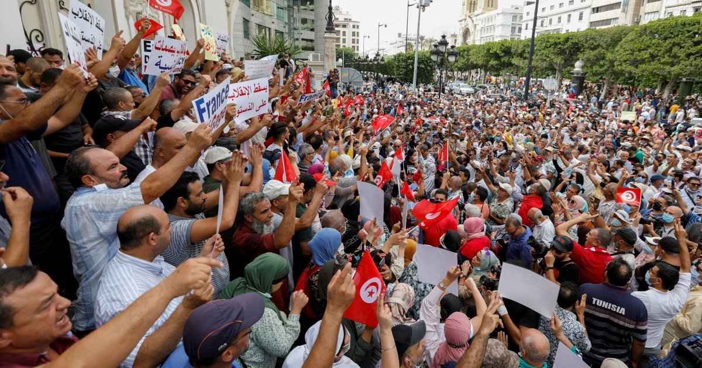

تونس.. اتحاد الشغل يجدد تحذيره من حصرالسلطات بيد الرئيس سعيد ويدعو لحل الأزمات بالحوار
قال الاتحاد التونسي للشغل إن احتكار الرئيس قيس سعيد تعديل الدستور والقانون الانتخابي خطر على الديمقراطية، محذرا من مخلطر حصر السلطات في يد الرئيس في غياب الهياكل الدستورية
